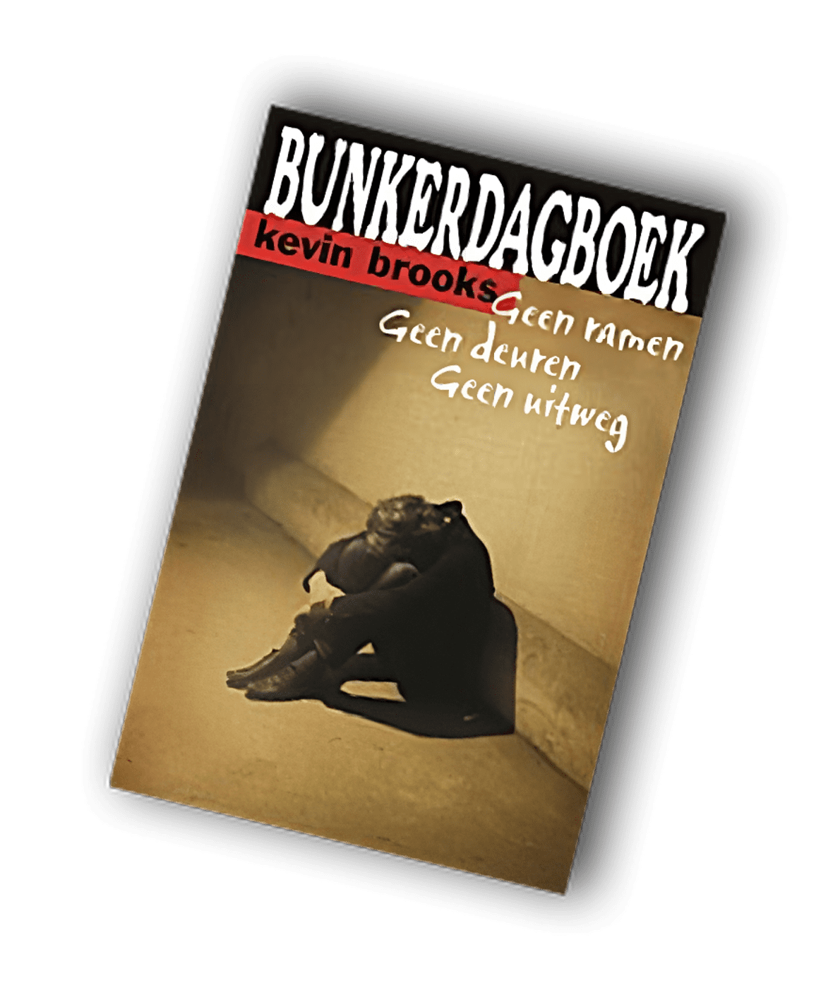
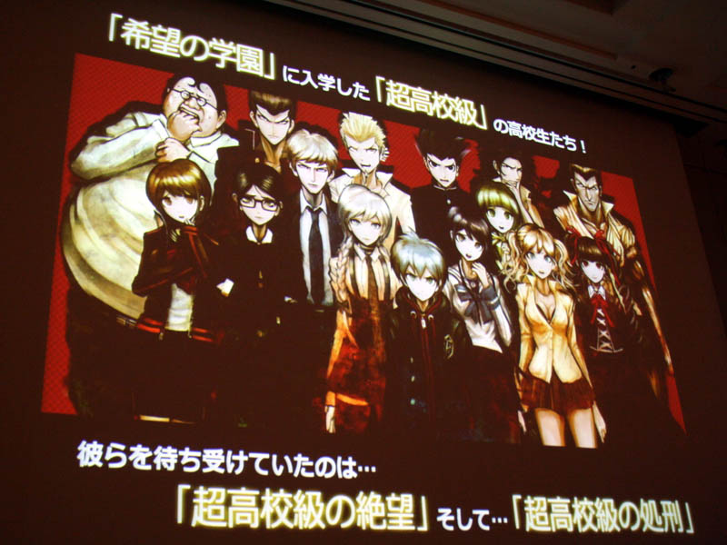
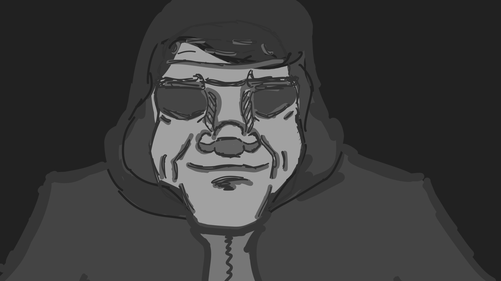

Mystery Mansion is de naam van mijn Murder Mystery Visual novel. Het is een verhaal over Inteligentie, Ego en existencialism
 Mijn sterkste inspiratie voor dit project komen van het opeindige boek 'Bunkerdagboek', het enige boek dat ik op de middelbare heb gelezen dat me echt is bijgebleven en de Battle Royal-esc visual novel 'Danganronpa'

Mijn Motivatie voor dit verhaal stemt uit mijn liefde voor mystery media als geheel. de gedachte dat een puzzel die half opgelost is, interssanter is en ons mensenbrein meer prikkelt.
Wat ik op zijn kop wil zetten met het genre is dat de karakters in mijn verhaal niet door hints en context dichterbij de antwoorden komen, ze alleen maar geconfronteerd worden met realiteiten die meer afstand zet tussen hun en het begrijpen van wat er aan de hand is.
Intiligentie, Ego, Existencialism, Wat maakt jou jou?, eenzaamheid, Zijn ethics make belief?
De manier waarop de karakters steeds verder weg bewegen van de antwwoorden die ze zoeken is grotendeels omdat hun voledige gevoel van de realiteit en hunzelf
herhalend word gebroken. Dit door de introductie van onmogelijke scifi concepts en de implicaties die ze hebben op hun wereld
Semi-Weekly chapter releases (netflix binge format en theorizing community) Teaser images & puzzles (Mild ARG aspect), tik tok edit material
Chapter 1, Small illustration, Basic Events, Concept, Thematic relevance, Resolution X all 7 chapter
Ik heb ook een 2de deel van dit verhaal in gedachte waarin ik de emotionele en thematische arcs van de overige karakters wil vereiken en een goed afsluit geven maar nogmaals geen antwoorden bied voor het grotere mysterie
Oude mystery pc game style, detailed yet flat textures, pretty yet slightly ominous vibe, character drawn in a variety of cartoony styles for expression, ease of drawing, standing out, personality through design
Easy engine for visual novel, wil leren coderen om dit verhaal tot leven te brengen tot de volledige extend dat ik daadwerkelijk wil. game design cool, niet zo cool proces/werkwijze en niet zo versataile als 3d animatie.
project had veel 3d models nodig maar vrijwel geen animatie. past bij skill set. verfrissend na frustraties karakteranimatie. omdat ik de skillset er al voor had, heel gepassioneerd en heel veel werk hiervan, daarom zover uitgewerkd